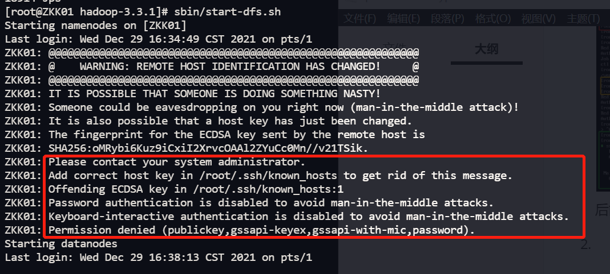

算法
线性结构
线性结构是一个有序数据元素的集合。 常用的线性结构有：线性表，栈，队列，双队列，串(一维数组)。 关于广义表、数组(高维)，是一种非线性的数据结构。 常见的非线性结构有：二维数组，多维数组，广义表，树(二叉树等)，图
特征
- 集合中必存在唯一的一个"第一个元素"；
- 集合中必存在唯一的一个"最后的元素"；
- 除最后元素之外，其它数据元素均有唯一的"后继"；
- 除第一元素之外，其它数据元素均有唯一的"前驱"。
数据结构中线性结构指的是数据元素之间存在着“一对一”的线性关系的数据结构。
如（a0,a1,a2,.....,an）,a0为第一个元素，an为最后一个元素，此集合即为一个线性结构的集合。 相对应于线性结构，非线性结构的逻辑特征是一个结点元素可能对应多个直接前驱和多个后继。
线性结构
什么是线性表？
多项式表示问题的启示：
- 同一个问题可以有不同的表示（存储）方式
- 有一类共性问题：有序线性序列的组织和管理
“线性表”：由同类型数据元素构成有序序列的线性结构
- 表中元素个数称为线性表的长度
- 线性表没有元素时，称为空表
- 表起始位置称为表头，表结束位置称表尾

线性表的链式存储实现
- 不要求逻辑上相邻的两个元素物理上也相邻；通过“链”建立起数据元素之间的逻辑关系。
- 插入、删除不需要移动数据元素，只需要修改“链”。
广义表
我们知道了一元多项式的表示，那么二元多项式又该如何表示？
- 广义表是线性表的推广
- 对于线性表而言，n个元素都是基本的单元素；
- 广义表中，这些元素不仅可以是单元素也可以是另一个广义表。
多重链表
链表中的节点可能同时隶属于多个链
- 多重链表中结点的指针域会有多个，如前面例子包含了Next和SubList两个指针域；
- 但包含两个指针域的链表并不一定是多重链表，比如在双向链表不是多重链表。
- 多重链表有广泛的用途：基本上如树、图这样相对复杂的数据结构都可以采用多重链表方式实现存储。

 这就是稀疏矩阵用十字链表解决的思路
这就是稀疏矩阵用十字链表解决的思路

大数据
linux
Hadoop1.x和Hadoop2.x区别
- Hadoop1.x组成
- MapReduce（计算+资源调度）
- HDFS（数据存储）
- Common（辅助工具）
- Hdoop2.x组成
- MapReduce（计算）
- Yarn（资源调度）
- HDFS（数据存储）
- Common（辅助工具）
在Hadoop1.X时代，Hadoop中的MapRudece同时处理业务逻辑运算和资源的调度，耦合性较大，在Hadoop2.X时代，增加了Yarn。Yarn只负责资源的调度，MapReduce只负责运算。
HDFS架构概述
- NameNode（nn）-类似目录：存储文件的元数据，如文件名，文件目录结构，文件属性（生成时间、副本数、文件权限），以及每个文件的块列表和块所在的DataNode等。
- DataNode（dn）-类似真正存储的数据：在本地文件系统存储文件块数据，以及块数据的校验和。
- Secondary NameNode（2nn）：用来监控HDFS状态的辅助后台程序，每隔一段时间获取HDFS元数据的快照。
YARN架构概述
- ResourceManager（RM）主要作用如下
- 处理客户端请求
- 监控NodeManager
- 启动或监控ApplicationMaster
- 资源的分配与调度
- NodeManager（NM）主要作用如下
- 管理单个节点上的资源
- 处理来自ResourceManager的命令
- 处理来自ApplicationMaster的命令
- ApplicationMaster（AM）作用如下
- 负责数据的切分
- 为应用程序申请资源并分配给内部的任务
- 任务的监控与容错
- Container
- Container是YARN中资源抽象，它封住了某个节点上的多维度资源，如内存、CPU、磁盘、网络等。
MapRudece架构概述
MapReduce将计算过程分为两个阶段：Map和Reduce
- Map阶段并行处理输入数据
- Reduce阶段对Map结果进行汇总
大数据技术生态系统
| 数据来源层 | 数据传输层 | 数据存储层 | 资源管理层 | 数据计算层 | 任务调度层 | 配置和调度 | 业务模型层 |
|---|---|---|---|---|---|---|---|
| 数据库（结构化数据） | Sqoop数据传递 | HDFS文件存储 | YARN资源管理 | MapReduce离线计算（1. Hive数据查询（javaEE）、2. Mahout数据挖掘（算法）） | Oozie任务调度、Azkaban任务调度 | Zookeeper（容易改变的配置信息） | 业务模型、数据库可视化、业务应用 |
| 文件日志（半结构化数据） | Flume日志收集 | HDFS文件存储/HBase非关系型数据库 | YARN资源管理 | Spark Core内存计算 （离线1. Spark Mlib数据挖掘、2.Spark R数据分析、3.Spark Sql数据查询；准实时批处理Spark Streaming实时计算）/Flink 流处理 | Oozie任务调度、Azkaban任务调度 | Zookeeper（容易改变的配置信息） | 业务模型、数据库可视化、业务应用 |
| 视频、ppt等（非结构化数据） | Kafka消息队列 | Kafka缓存一些数据 | Zookeeper（容易改变的配置信息） | 业务模型、数据库可视化、业务应用 |

推荐系统项目框架

单机模式 stonealone
- grep案例
- WordCount案例
伪分布式模式
- 所有配置都是按照分布式来的
- 但是只有一台服务器
虚拟机环境准备
vim /etc/udev/rules.d/70-persistent-net.rules //修改最后为eth0
vim /etc/sysconfig/network-scripts/ifcfg-eth0
https://juejin.cn/post/6991352348471722014#heading-18
https://juejin.cn/post/6844904114980126734#heading-1
# 设置环境变量
$ vim /etc/profile
# 进入之后在文件末尾追加如下内容：
#java
export JAVA_HOME=/usr/lib/jvm/java-1.8.0-openjdk
export JRE_HOME=${JAVA_HOME}/jre
export CLASSPATH=.:${JAVA_HOME}/lib:${JRE_HOME}/lib
export PATH=${JAVA_HOME}/bin:$PATH
#hadoop
export HADOOP_HOME=/opt/software/hadoop-3.3.1
export PATH=$PATH:$HADOOP_HOME/bin
export PATH=$PATH:$HADOOP_HOME/sbin
export HADOOP_MAPRED_HOME=$HADOOP_HOME
export HADOOP_COMMON_HOME=$HADOOP_HOME
export HADOOP_HDFS_HOME=$HADOOP_HOME
export YARN_HOME=$HADOOP_HOME
export HADOOP_COMMON_LIB_NATIVE_DIR=$HADOOP_HOME/lib/native
export HADOOP_OPTS="-Djava.library.path=$HADOOP_HOME/lib"
export JAVA_LIBRARY_PATH=$HADOOP_HOME/lib/native:$JAVA_LIBRARY_PATH
# 使环境变量生效
$ source /etc/profile
<property>
<name>hadoop.tmp.dir</name>
<value>/opt/software/hadoop-3.3.1/data/tmp</value>
</property>
配置免密登录
1.编辑/etc/hosts
(下面的 IPn 表示如 192.168.1.1 格式的云服务器外网 IP 地址。注意，如果是指向本机的 IP，请用内网 IP 地址代替)
IP1 ZKK01
IP2 slave1
IP3 slave2
2.切换到hadoop用户生成id_rsa.pub(我是root用户所以不用切换和赋权)
su hadoop
cd ~
ssh-keygen -t rsa
cd ~/.ssh/
cat id_rsa.pub >> authorized_keys
#chmod 700 /home/hadoop/.ssh
#chmod 644 /home/hadoop/.ssh/authorized_keys
---以上命令所有云服务器都要运行---
3.交换共享 id_rsa.pub 的内容
（如果搭建伪分布模式，则可以略过交换共享这一步，直接进行 ssh 的测试）--我就是伪分布式
1) master 云服务器操作
scp /home/hadoop/.ssh/authorized_keys slave2:/home/hadoop/.ssh/
(2) slave1 云服务器操作
scp /home/hadoop/.ssh/authorized_keys slave3:/home/hadoop/.ssh/
(3) slave2 云服务器操作
scp /home/hadoop/.ssh/authorized_keys master:/home/hadoop/.ssh/
- 这一步的最终目的是让所有云服务器的 authorized_keys 内容都包含各自的 id_rsa.pub 信息，且内容相同。
(4) 测试配置是否成功
master 上执行命令：
ssh slave1
quit
ssh slave2
quit
slave1 上执行命令：
ssh master
quit
ssh slave2
quit
slave2 上执行命令：
ssh master
quit
ssh slave1
quit
- 需要确保所有云服务器能够相互
ssh通过。 - 第一次进行
ssh需要密码登录。输完密码之后，选择yes保存记录。之后就不再需要输入密码登录了。 - 如果出现异常情况，可重启服务再尝试：
sudo service sshd service。
修改配置文件
1. /etc/profile 配置环境变量
vim /opt/software/hadoop-3.3.1/etc/profile

#java
export JAVA_HOME=/usr/lib/jvm/java-1.8.0-openjdk
export JRE_HOME=${JAVA_HOME}/jre
export CLASSPATH=.:${JAVA_HOME}/lib:${JRE_HOME}/lib
export PATH=${JAVA_HOME}/bin:$PATH
#hadoop
export HADOOP_HOME=/opt/software/hadoop-3.3.1
export PATH=$PATH:$HADOOP_HOME/bin
export PATH=$PATH:$HADOOP_HOME/sbin
export HADOOP_MAPRED_HOME=$HADOOP_HOME
export HADOOP_COMMON_HOME=$HADOOP_HOME
export HADOOP_HDFS_HOME=$HADOOP_HOME
export YARN_HOME=$HADOOP_HOME
export HADOOP_COMMON_LIB_NATIVE_DIR=$HADOOP_HOME/lib/native
export HADOOP_OPTS="-Djava.library.path=$HADOOP_HOME/lib"
export JAVA_LIBRARY_PATH=$HADOOP_HOME/lib/native:$JAVA_LIBRARY_PATH
2. 使环境变量生效
source /etc/profile
3.进入这三个文件 每个文件都添加
vim hadoop-env.sh
export JAVA_HOME=/root/apps/jdk(JDK安装目录)
集群配置
也可以都配置在同一台机子上如果内存够的话..
四个默认核心文件
四个自定义文件：
#配置路径
/opt/software/hadoop-3.3.1/etc/hadoop
- 配置core-site.xml
<?xml version="1.0" encoding="UTF-8"?>
<?xml-stylesheet type="text/xsl" href="configuration.xsl"?>
<!-- Put site-specific property overrides in this file. -->
<configuration>
<!--指定HDFS中NameNode的地址-->
<property>
<name>fs.defaultFS</name>
<value>hdfs://ZKK01:8020</value>
<!-- 除了8020 还有9000等 -->
</property>
<!--指定Hadoop运行时产生文件的存储目录-->
<property>
<name>hadoop.tmp.dir</name>
<value>/opt/software/hadoop-3.3.1/data/tmp</value>
</property>
<!--配置HDFS网页登录使用的静态用户为zkk，可以不配置-->
<property>
<name>hadoop.http.staticuser.user</name>
<value>ZKK01</value>
</property>
</configuration>
- 配置hdfs-site.xml
<?xml version="1.0" encoding="UTF-8"?>
<?xml-stylesheet type="text/xsl" href="configuration.xsl"?>
<configuration>
<!-- nn web端访问地址 -->
<property>
<name>dfs.namenode.http-address</name>
<value>ZKK01:9870</value>
</property>
<!-- 指定HDFS副本的数量 -->
<property>
<name>dfs.replication</name>
<value>1</value>
</property>
<!-- 2nn web端访问地址 -->
<property>
<name>dfs.namenode.secondary.http-address</name>
<value>ZKK01:9870</value>
</property>
</configuration>
- 配置yarn-site.xml
<configuration>
<!-- 指定MR走shuffle-->
<property>
<name>yarn.nodemanager.aux-services</name>
<value>mapreduce_shuffle</value>
</property>
<!--指定ResourceManager地址-->
<property>
<name>yarn.resourcemanager.address</name>
<value>ZKK01</value>
</property>
<!--环境变量的继承-->
<!--3.1.3以上的版本解决了这个bug可以不配置-->
</configuration>
- 配置mapred-site.xml
<configuration>
<!--指定MapReduce程序运行在Yarn上-->
<property>
<name>mapreduce.framework.name</name>
<value>yarn</value>
</property>
</configuration>
群起集群
1. 配置Works
vim /opt/software/hadoop-3.3.1/etc/hadoop/workers
#默认为local 把local注释掉
ZKK01
2. 启动集群
- 如果集群是第一次启动，需要在ZKK01节点格式化NameNode（注意：格式化NameNode，会产生新的集群id，导致NameNode和DataNode的集群id不一致，集群找不到以往数据。如果集群在运行中报错，需要重新格式化NameNode的话，一定要先停止namenode和datanode进程，并且要删除所有机器的data和logs目录，然后再进行格式化）
[root@ZKK01 hadoop-3.3.1]# hdfs namenode -format
- 启动HDFS
[root@ZKK01 hadoop-3.3.1]# sbin/start-dfs.sh
/opt/software/hadoop-3.3.1/data/tmp/dfs/name/current

- 启动过程中遇到报错（root权限问题?）

解决办法：
-
方法一：
在Hadoop安装目录下找到sbin文件夹
在里面修改四个文件
1、对于start-dfs.sh和stop-dfs.sh文件，添加下列参数：
#!/usr/bin/env bash HDFS_DATANODE_USER=root HADOOP_SECURE_DN_USER=hdfs HDFS_NAMENODE_USER=root HDFS_SECONDARYNAMENODE_USER=root2、对于start-yarn.sh和stop-yarn.sh文件，添加下列参数：
#!/usr/bin/env bash YARN_RESOURCEMANAGER_USER=root HADOOP_SECURE_DN_USER=yarn YARN_NODEMANAGER_USER=root重新开始start…就可以。
-
方法二（推荐采用）

-
cd /etc/hadoop/ vim hadoop-env.sh -
export HDFS_NAMENODE_USER=root export HDFS_DATANODE_USER=root export HDFS_SECONDARYNAMENODE_USER=root export YARN_RESOURCEMANAGER_USER=root export YARN_NODEMANAGER_USER=root -
Now save and start yarn, hdfs service and check that it works.
我们在hadoop-env.sh文件中也可以找到如下的描述
To prevent accidents, shell commands be (superficially) locked to only allow certain users to execute certain subcommands.
为了防止发生意外，仅（部分）锁定shell命令以仅允许某些用户执行某些子命令。
It uses the format of (command)_(subcommand)_USER.For example, to limit who can execute the namenode command,export HDFS_NAMENODE_USER=hdfs
使用“命令_子命令_用户”，例如，通过使用export HDFS_NAMENODE_USER=hdfs来限制哪个用户可以执行namenode命令。参考stackoverflow上的相关讨论
-
-
Web访问NameNode Web地址
-
IP：9870（配置hdfs-site.xml时候设置的）
-
查看HDFS上存储的数据信息
-
我是用云服务器的 所以记得在云服务器防火墙管理中添加可访问端口（其他端口同理）
-
-
在配置了ResourceManager的节点（ZKK01）启动YARN
-
[root@ZKK01 hadoop-3.3.1]# sbin/start-yarn.sh
- Web端查看YARN的ResourceManager
- IP：8088
- 查看YARN上运行的Job信息
集群基本测试
1.上传文件到集群
上传小文件
hadoop fs -mkdir /wcinput
hadoop fs -put wcinput/wc.input /wcinput

网页中操作，要在本地机配置hosts文件
2.查看HDFS在磁盘存储文件内容
- 查看：页面只是一个链接，真实的东西都存在data节点上。
cd data/tmp/dfs/data/current/BP-912934988-110.42.160.28-1641041699096/current/finalized/subdir0/subdir0/
cat blk_1073741825
zhangkeke hadoop zhangsan lisi wangwu
liuliu wangmengting xingguo
zhangkeke
keke keke keke keke keke hadoop
hive hivehive
-
拼接：默认块大小128MB如上传一个jdk tar包，其实也是放在节点上 可通过拼接命令查看

3.下载
hadoop fs -get /XXX ./
4.执行wordcount程序
hadoop jar share/hadoop/mapreduce/hadoop-mapreduce-examples-3.3.1.jar wordcount /wcinput /wcoutput
配置历史服务器
3.2以上的版本没配置也能跳转
<!--历史服务器端地址-->
<property>
<name>mapreduce.jobhistory.address</name>
<value>master:10020</value>
</property>
<!--历史服务器web端地址-->
<property>
<name>mapreduce.jobhistory.webapp.address</name>
<value>master:19888</value>
</property>
需要手动启动历史服务器
mapred --daemon start historyserver
开启日志聚集功能！
伪分布式就不用了

hadoop集群的群起脚本
https://www.codetd.com/article/1452178
[TOC]

第一章 HDFS概述
1.1HDFS产出背景及定义
-
HDFS产出背景
随着数据量越来越大，在一个操作系统存不下所有的数据，那么就分配到更多的操作系统管理的磁盘中，但是不方便管理和维护，迫切需要一种系统来管理多台机器上的文件，这就是分布式文件管理系统。HDFS 只是分布式文件管理系统中的一种。
-
HDFS定义
HDFS（Hadoop Distributed File System），它是一个文件系统，用于存储文件，通过目录树来定位文件；其次，它是分布式的，由很多服务器联合起来实现其功能，集群中的服务器有各自的角色。
HDFS 的使用场景：适合一次写入，多次读出的场景。一个文件经过创建、写入和关闭之后就不需要改变。
1.2 HDFS优缺点
优点：
- 高容错性
- 数据自动保存多个副本。它通过增加副本的形式，提高容错性。
- 某一个副本丢失以后，它可以自动恢复。
- 适合处理大数据
- 数据规模：能够处理数据规模达到GB、TB、甚至PB级别的数据。
- 文件规模：能够处理百万规模以上的文件数量，数量相当之大。
- 可构建在廉价机器上，通过多副本机制，提高可靠性
缺点：
- 低时间延迟的访问
- 要求低时间延迟的数据访问的应用，不适合在HDFS上运行，比如毫秒级的存储数据。HDFS是提高数据吞吐量的应用优化的，但可能会以提高时间延迟为代价。
-
无法高效的对大量小文件进行存储：
- 存储大量小文件(这里的小文件是指小于HDFS系统的Block大小的文件（默认64M）)的话，它会占用 NameNode大量的内存来存储文件、目录和块信息。这样是不可取的，因为NameNode的内存总是有限的。
- 由于namenode将文件系统的元数据存储在内存中，因此文件系统所能存储的文件数量受限制于namenode的内存容量。
- 小文件存储的寻道时间会超过读取时间，它违反了HDFS的设计目标。
NN负责文件元数据(属性，块的映射)的管理，NN在运行时，必须将当前集群中存储所有文件的元数据全部加载到内存！NN耗费大量内存！ 而不能存储可观的数据。 举例： 当前运行NN的机器，有64G内存，除去系统开销，分配给NN50G内存！ 文件a (1k), 存储到HDFS上，需要将a文件的元数据保存到NN，加载到内存 包括：文件名 创建时间 所属主 所属组 权限 修改时间+ 块的映射(1块) NN占用内存：150B 最多存储50G/150B个文件a 存储占用磁盘空间：50G/150B * 1k 文件b (128M), 存储到HDFS上，需要将b文件的元数据保存到NN，加载到内存 包括：文件名 创建时间 所属主 所属组 权限 修改时间+块的映射(1块) NN占用内存：150B 最多存储50G/150B个文件b 存储占用磁盘空间：50G/150B * 128M -
并发写入，文件随机修改：
- 一个文件只能有一个写，不允许多个线程同时写。
- 仅支持数据 append（追加），不支持文件的随机修改。
1.3HDFS组成架构
-
NameNode（nn）：就是Master，它是一个主管、管理者- 管理HDFS的名称空间；
- 配置副本策略；
- 管理数据块（Block）映射信息；
- 处理客户端读写请求。
-
DataNode（dn）：就是Slave(3.x之后叫worker)。NameNode下达命令，DataNode执行实际的操作- 存储实际的数据块；
- 执行数据块的读/写操作。

Client：就是客服端
- 文件切分：文件上传HDFS的时候，Client将文件切分成一个一个的Block，然后进行上传；
- 与NameNode交互，获取文件的位置信息；（允不允许读）
- 与DataNode交互，读取或者写入数据；
- Client提供一些命令来管理HDFS，比如NameNode格式化；
- Client可以通过一些命令来访问HDFS，比如对HDFS增删改查操作。
-
Secondary NameNode：并非NameNode的热备。当NameNode挂掉的时候，它并不能马上替换NameNode并提供服务。
- 辅助NameNode，分担其工作。
- 但是我们以后都会用2个NameNode来代替，因为NameNode有高可用的特性。
1.4HDFS 文件块大小（面试重点）
HDFS中的文件再物理上是分块存储（Block），块的大小可以通过配置参数（dfs.blocksize）来规定，默认大小在Hadoop2.x/3.x版本中是128M,1.X版本中是64M。
- 如果寻址时间约为10ms，即查找到目标block的时间为10ms。
- 寻址时间为传输时间的1%时，则为最佳状态。因此，传输时间=10ms/0.01=1000ms=1s
- 而目前磁盘的传输速率普遍为100MB/s（固态硬盘200~300M）
- 因此：普通硬盘的设置成128M
- 固态硬盘块大小可以设置成256M
-
为什么块的大小不能设置太小，也不能设置太大？
- HFDFS的块设置太小，会增加寻址时间，程序一直在找块的开始位置；
- 如果块设置的太大，从磁盘传输数据的时间会明显** **。导致程序在处理这块数据时，会非常慢。
总结：HDFS块的大小设置主要取决于磁盘传输速率。
第二章 HDFS的Shell操作（开发重点）
2.1 基本语法
hadoop fs 具体命令 OR hdfs dfs 具体命令
两个完全相同
2.2 命令大全
[root@ZKK01 ~]# hadoop fs
2022-01-05 15:11:03,273 WARN util.NativeCodeLoader: Unable to load native-hadoop library for your platform... using builtin-java classes where applicable
Usage: hadoop fs [generic options]
[-appendToFile <localsrc> ... <dst>]
[-cat [-ignoreCrc] <src> ...]
[-checksum [-v] <src> ...]
[-chgrp [-R] GROUP PATH...]
[-chmod [-R] <MODE[,MODE]... | OCTALMODE> PATH...]
[-chown [-R] [OWNER][:[GROUP]] PATH...]
[-concat <target path> <src path> <src path> ...]
[-copyFromLocal [-f] [-p] [-l] [-d] [-t <thread count>] <localsrc> ... <dst>]
[-copyToLocal [-f] [-p] [-ignoreCrc] [-crc] <src> ... <localdst>]
[-count [-q] [-h] [-v] [-t [<storage type>]] [-u] [-x] [-e] [-s] <path> ...]
[-cp [-f] [-p | -p[topax]] [-d] <src> ... <dst>]
[-createSnapshot <snapshotDir> [<snapshotName>]]
[-deleteSnapshot <snapshotDir> <snapshotName>]
[-df [-h] [<path> ...]]
[-du [-s] [-h] [-v] [-x] <path> ...]
[-expunge [-immediate] [-fs <path>]]
[-find <path> ... <expression> ...]
[-get [-f] [-p] [-ignoreCrc] [-crc] <src> ... <localdst>]
[-getfacl [-R] <path>]
[-getfattr [-R] {-n name | -d} [-e en] <path>]
[-getmerge [-nl] [-skip-empty-file] <src> <localdst>]
[-head <file>]
[-help [cmd ...]]
[-ls [-C] [-d] [-h] [-q] [-R] [-t] [-S] [-r] [-u] [-e] [<path> ...]]
[-mkdir [-p] <path> ...]
[-moveFromLocal [-f] [-p] [-l] [-d] <localsrc> ... <dst>]
[-moveToLocal <src> <localdst>]
[-mv <src> ... <dst>]
[-put [-f] [-p] [-l] [-d] [-t <thread count>] <localsrc> ... <dst>]
[-renameSnapshot <snapshotDir> <oldName> <newName>]
[-rm [-f] [-r|-R] [-skipTrash] [-safely] <src> ...]
[-rmdir [--ignore-fail-on-non-empty] <dir> ...]
[-setfacl [-R] [{-b|-k} {-m|-x <acl_spec>} <path>]|[--set <acl_spec> <path>]]
[-setfattr {-n name [-v value] | -x name} <path>]
[-setrep [-R] [-w] <rep> <path> ...]
[-stat [format] <path> ...]
[-tail [-f] [-s <sleep interval>] <file>]
[-test -[defswrz] <path>]
[-text [-ignoreCrc] <src> ...]
[-touch [-a] [-m] [-t TIMESTAMP (yyyyMMdd:HHmmss) ] [-c] <path> ...]
[-touchz <path> ...]
[-truncate [-w] <length> <path> ...]
[-usage [cmd ...]]
2.3 常用实操命令
2.3.1 准备工作
- 启动Hadoop集群（方便后续测试）
[root@ZKK01 hadoop-3.3.1]# sbin/start-all.sh
- -help：输出这个命令参数的帮助，也可以去百度
[root@ZKK01 hadoop-3.3.1]# hadoop fs -help rm
- 创建/sanguo文件夹
[root@ZKK01 hadoop-3.3.1]# hadoop fs -mkdir /sanguo
2.3.2 上传
-
-moveFromLocal 从本地剪切粘贴到HDFS
[root@ZKK01 hadoop-3.3.1]# vim shuguo.txt 输入： shuguo [root@ZKK01 hadoop-3.3.1]# hadoop fs -moveFromLocal ./shuguo.txt /sanguo -
-copyFromLocal 从本地文件系统拷贝文件到HDFS路径去
-
-put 等同于copyFromLocal，生产环境更习惯用put
hadoop fs -put ./wuguo.txt /sanguo -
-appendToFile 追加一个文件到已经存在的文件末尾
vim liubei.txt 输入： liubei hadoop fs -appendToFile liubei.txt /sanguo/shuguo.txt
2.3.3 下载
-
-copyToLocal：从HDFS拷贝到本地
-
-get：等同于copyToLocal，生产环境更习惯用get
hadoop fs -get /sanguo/shuguo.txt ./shuguo2.txt
2.3.4 HDFS 直接操作
-
-ls： 显示目录信息
hadoop fs -ls /sanguo -
-cat：显示文件内容
hadoop fs -cat /sanguo/shuguo.txt -
-chgrp、-chmod、-chown：Linux文件系统中的用法一样，修改文件所属权限
hadoop fs -chmod 666 /sanguo/shuguo.txt hadoop fs -chmod ZKK01:ZKK01 /sanguo/shuguo.txt -
-mkdir：创建路径
hadoop fs -mkdir /jinguo -
-cp：从HDFS的一个路径拷贝到HDFS的另一个路径
hadoop fs -cp /sanguo/shuguo.txt /jinguo -
-mv：在HDFS目录中移动文件
hadoop fs -mv /sanguo/wuguo.txt /jinguo hadoop fs -mv /sanguo/weiguo.txt /jinguo -
-tail：显示一个文件的末尾1kb的数据
hadoop fs -tail /jinguo/shuguo.txt -
-rm：删除文件或文件夹
hadoop -rm /sanguo/shuguo.txt -
-rm -r：递归删除目录及目录里面的内容
hadoop fs -rm -r /sanguo -
-du：统计文件夹的大小信息
hadoop fs -du -s -h /jinguo #只列出文件夹总大小 hadoop fs -du -h /jinguo #文件夹内内容详细信息 -
-setrep：设置HDFS中文件的副本数量
hadoop fs -setrep 10 /jinguo/shuguo.txt
这里设置的副本数只是记录在NameNode的元数据中，是否真的会有这么多副本，还得看DataNode的数量。因为目前只有3台设备，最多也就3个副本，只有节点数的增加到10台时，副本数才能达到10。
第三章 HDFS的API操作
3.1客户端环境准备
-
windows去：https://github.com/kontext-tech/winutils 下载对应版本的编译好的bin文件替换原来安装在windows里的hadoop文件的bin
-
将bin文件里的hadoop.dll粘贴到system32里
-
创建maven项目导入相关相关依赖
3.2HDFS-API相关操作
github上我仓库的hadoopLearning :https://github.com/AirlandKK/hadoopLearning
第四章 HDFS的读写流程（面试重点）
4.1 HDFS写数据流程
4.1.1 剖析文件写入

1、客户端通过Distributed FileSystem模块向namenode请求上传文件到/user/atguigu/ss.avi这个路径文件
2、校验文件是否存在，如果存在就会报目录存在这个错误，如果不存在则相应可以上传文件
3、客户端请求第一个Block（0-128M）上传到那几个DataNode服务器上
4、返回dn1，dn2，dn3节点，表示这三个节点可以存储数据（通过负载量和距离来选择dn）
5、客户端通过调用FSDataOutPutStream模块请求dn1上传数据，dn1收到请求会继续调用dn2，然后dn2调用dn3，将这个通信 管道建立完成。
6、dn1、dn2、dn3逐级应答客户端。
7、客户端开始往dn1上传第一个Block（先从磁盘读取数据放到一个本地内存缓存），以Packet为单位，dn1收到一个Packet就 会传给dn2，dn2传给dn3；dn1每传一个packet会放入一个应答队列等待应答。
当一个Block传输完成之后，客户端再次请求NameNode上传第二个Block的服务器。（重复执行3-7步）。
8、告诉namenode传输完成
4.1.2 网络拓扑-节点距离计算
在HDFS写数据的过程中，NameNode会选择距离待上传数据最近距离的DataNode接收数据。那么这个最近距离怎么计算呢？
节点距离：两个节点到达最近的共同祖先的距离总和。
把n当作服务器，把机架r看作交换机，把d看作机房，把最外面看作互联网，一条线计为1
4.1.3 机架感知（副本存储节点选择）
-
机架感知说明
-
官网说明：https://hadoop.apache.org/docs/stable/hadoop-project-dist/hadoop-hdfs/HdfsDesign.html
For the common case, when the replication factor is three, HDFS’s placement policy is to put one replica on the local machine if the writer is on a datanode, otherwise on a random datanode in the same rack as that of the writer, another replica on a node in a different (remote) rack, and the last on a different node in the same remote rack. This policy cuts the inter-rack write traffic which generally improves write performance. The chance of rack failure is far less than that of node failure; this policy does not impact data reliability and availability guarantees. However, it does not reduce the aggregate network bandwidth used when reading data since a block is placed in only two unique racks rather than three. With this policy, the replicas of a block do not evenly distribute across the racks. Two replicas are on different nodes of one rack and the remaining replica is on a node of one of the other racks. This policy improves write performance without compromising data reliability or read performance.
-
第一个副本在Client所处的节点上。如果客户端在集群外，随机选一个，第二个副本在另一个机架的随机一个节点，第三个副本在第二个副本所在机架的随即节点。（保持可靠性兼顾效率）
-
-
源码说明
- Crtl+n 查找BlockPlacementPolicyDefault，在该类中chooseTargetInOrder方法。
4.2 HDFS读数据流程
1、客户端通过Distributed FileSystem（客户端对象）向NameNode请求下载文件，创建一个FSDataInputStream（流对象）。（Namenode要判断该请求是否有权限、文件是否存在）
2、NameNode通过查询元数据，找到文件块所在的DataNode地址，返回目标文件的元数据。
3、挑选一台DataNode（就近原则，然后随机）服务器，请求读取数据。（判断节点距离、也会判断负载均衡）
4、DataNode开始传输数据给客户端（从磁盘里面读取数据输入流，以Packet为单位来做校验）。
5、客户端以Packet为单位接收，先在本地缓存，然后写入目标文件。
6、最后会关闭资源
PS ：HDFS的读的方式都是串行读！只能串行读！为了保证每一个任务的传输效率，且追求稳定可靠
第五章 NameNode和SecondaryNameNode
5.1 NN和2NN的关系
内存：
好处：计算快
坏处：可靠性差
磁盘：
好处：可靠性高
坏处：计算慢
内存+磁盘=》效率低
fsImage 存储数据（如果是随机读写效率 a=10 a+10=>a=20）
对历史数据的改写效率很低，
但是可以追加
Edits追加=>a+10 a-30 a*20 （只记录过程）
fsImage存储数据+Edits追加=内存 (2NN可以帮助这两个文件定期进行合并)
工作机制图：

1 第一阶段： namenode 启动 1）第一次启动 namenode 格式化后， 创建 fsimage 和 edits 文件。如果不是第一次启动，直接加载编辑日志和镜像文件到内存。 2） 客户端对元数据进行增删改的请求。 3） namenode 记录操作日志，更新滚动日志。 4） namenode 在内存中对数据进行增删改查。
2 第二阶段： Secondary NameNode 工作 1） Secondary NameNode 询问 namenode 是否需要 checkpoint。 直接带回 namenode 是否检查结果。 2） Secondary NameNode 请求执行 checkpoint。 3） namenode 滚动正在写的 edits 日志。 4）将滚动前的编辑日志和镜像文件拷贝到 Secondary NameNode。 5） Secondary NameNode 加载编辑日志和镜像文件到内存，并合并。 6） 生成新的镜像文件 fsimage.chkpoint。 7） 拷贝 fsimage.chkpoint 到 namenode。 8） namenode 将 fsimage.chkpoint 重新命名成 fsimage。
ps：定时时间默认1小时，Edits数据满了默认100万条
NN和2NN工作机制详解：
Fsimage：namenode内存中元数据序列化后形成的文件。
Edits：记录客户端更新元数据信息的每一步操作（可通过Edits运算出元数据）。
namenode启动时，先滚动edits并生成一个空的edits.inprogress，然后加载edits和fsimage到内存中，此时namenode内存就持有最新的元数据信息。client开始对namenode发送元数据的增删改查的请求，这些请求的操作首先会被记录的edits.inprogress中（查询元数据的操作不会被记录在edits中，因为查询操作不会更改元数据信息），如果此时namenode挂掉，重启后会从edits中读取元数据的信息。然后，namenode会在内存中执行元数据的增删改查的操作。
由于edits中记录的操作会越来越多，edits文件会越来越大，导致namenode在启动加载edits时会很慢，所以需要对edits和fsimage进行合并（所谓合并，就是将edits和fsimage加载到内存中，照着edits中的操作一步步执行，最终形成新的fsimage）。secondarynamenode的作用就是帮助namenode进行edits和fsimage的合并工作。
secondarynamenode首先会询问namenode是否需要checkpoint（触发checkpoint需要满足两个条件中的任意一个，定时时间到和edits中数据写满了）。直接带回namenode是否检查结果。secondarynamenode执行checkpoint操作，首先会让namenode滚动edits并生成一个空的edits.inprogress，滚动edits的目的是给edits打个标记，以后所有新的操作都写入edits.inprogress，其他未合并的edits和fsimage会拷贝到secondarynamenode的本地，然后将拷贝的edits和fsimage加载到内存中进行合并，生成fsimage.chkpoint，然后将fsimage.chkpoint拷贝给namenode，重命名为fsimage后替换掉原来的fsimage。namenode在启动时就只需要加载之前未合并的edits和fsimage即可，因为合并过的edits中的元数据信息已经被记录在fsimage中。
5.2 Fsimage（镜像文件）和Edits（编辑日志）解析
- 概念
NameNode被格式化之后，将在/hadoop-3.1.3/data/tmp/dfs/name/current目录中产生如下文件
[root@ZKK01 current]# ll
total 1044
-rw-r--r-- 1 root root 640 Jan 6 21:18 edits_0000000000000000001-0000000000000000009
-rw-r--r-- 1 root root 1048576 Jan 6 21:18 edits_inprogress_0000000000000000010
-rw-r--r-- 1 root root 399 Jan 6 21:01 fsimage_0000000000000000000
-rw-r--r-- 1 root root 62 Jan 6 21:01 fsimage_0000000000000000000.md5
-rw-r--r-- 1 root root 3 Jan 6 21:18 seen_txid
-rw-r--r-- 1 root root 215 Jan 6 21:01 VERSION
- Fsimage文件：HDFS文件系统元数据的一个永久性的检查点，其中包含HDFS文件系统的所有目录和文件inode的序列化信息
- Edits文件：存放HDFS文件系统的所有更新操作的路径，文件系统客户端执行的所有写操作首先会被记录到Edits文件中。
- seen_txid文件保存的是一个数字，就是最后一个edits_的数字
- 每次NameNode启动的时候都会将fsimage文件读入内存，加载edits里面的更新操作，保证内存中的元数据信息是最新的、同步的，可以看成NameNode启动的时候就将fsimage和edits文件进行了合并。
-
oiv查看fsimage文件
-
查看oiv和oev命令
[root@ZKK01 current]# hdfs oiv apply the offline fsimage viewer to an fsimage oev apply the offline edits viewer to an edits file -
基本语法
hdfs oiv -p 文件类型 -i镜像文件 -o 转换后文件输出路径 -
举个例子
[root@ZKK01 current]# pwd /opt/software/hadoop-3.3.1/data/tmp/dfs/name/current [root@ZKK01 current]# hdfs oiv -p XML -i fsimage_0000000000000000000 -o /opt/software/hadoop-3.3.1/fsimage.xml 2022-01-14 13:39:03,374 INFO offlineImageViewer.FSImageHandler: Loading 2 strings 2022-01-14 13:39:03,546 INFO namenode.FSDirectory: GLOBAL serial map: bits=29 maxEntries=536870911 2022-01-14 13:39:03,546 INFO namenode.FSDirectory: USER serial map: bits=24 maxEntries=16777215 2022-01-14 13:39:03,546 INFO namenode.FSDirectory: GROUP serial map: bits=24 maxEntries=16777215 2022-01-14 13:39:03,546 INFO namenode.FSDirectory: XATTR serial map: bits=24 maxEntries=16777215 [root@ZKK01 current]# cat /opt/software/hadoop-3.3.1/fsimage.xml -
命令：sz 文件名 可以存到windows
[root@ZKK01 current]# sz /opt/software/hadoop-3.3.1/fsimage.xml
-
-
oev查看edits文件
-
基本语法
hdfs oev -p 文件类型 -i编辑日志 -o 转换后文件输出路径 -
举个例子
[root@ZKK01 current]# hdfs oev -p XML -i edits_0000000000000000001-0000000000000000009 -o /opt/software/hadoop-3.3.1/edits.xml
-
-
思考namenode怎么确定下次合并那些edits？
- 将大于fsimage最后序号的edits文件合并
5.3 CheckPoint时间设置
-
通常情况下，SecondaryNameNode每隔一小时执行一次。
[hdfs-default.xml]
<property> <name>dfs.namenode.checkpoint.period</name> <value>3600</value> </property > -
一分钟检查一次操作次数，当操作次数达到1百万时，SecondaryNameNode执行一次。
<property> <name>dfs.namenode.checkpoint.txns</name> <value>1000000</value> <description>操作动作次数</description> </property> <property> <name>dfs.namenode.checkpoint.check.period</name> <value>60</value> <description> 1分钟检查一次操作次数</description> </property >
第六章 DataNode
6.1 DataNode 工作机制

-
一个数据块在 datanode 上以文件形式存储在磁盘上，包括两个文件，一个是数据本身，一个是元数据包括数据块的长度，块数据的校验和，以及时间戳。
-
DataNode 启动后向 namenode 注册， 通过后，周期性（6小时） 的向 namenode 上报所有的块信息。

-
心跳是每 3 秒一次，心跳返回结果带有 namenode 给该 datanode 的命令如复制块数据到另一台机器，或删除某个数据块。 如果超过 10 分钟没有收到某个 datanode 的心跳，则认为该节点不可用。
-
集群运行中可以安全加入和退出一些机器。
6.2 数据完整性
-
当DataNode读取block的时候，它会计算checksum校验和
-
如果计算后的checksum，与block创建时值不一样，说明block已经损坏。
-
client读取其他DataNode上的block.
-
常见的校验算法crc(32),md5(128),shal(160)
-
datanode在其文件创建后周期验证checksum校验和
6.3 掉线时限参数设置
1、DataNode进程死亡或者网络故障造成DataNode无法与NameNode通信; 2、NameNode不会立即把该节点判定为死亡，要经过一段时间，这段时间暂称作超时时长; 3、HDFS默认的超时时长为10分钟+30秒; 4、如果定义超时时间为TimeOut，则超时时长的计算公式为：
TimeOut = 2 * dfs.namenode.heartbeat.recheck-interval + 10 * dfs.heartbeat.interval
而默认的dfs.namenode.heartbeat.recheck-interval 大小为5分钟，dfs.heartbeat.interval默认为3秒。需要注意的是 hdfs-site.xml 配置文件中的heartbeat.recheck.interval 的单位为毫秒，dfs.heartbeat.interval 的单位为秒。
<property>
<name>dfs.namenode.heartbeat.recheck-interval</name>
<value>300000</value>
</property>
<property>
<name>dfs.heartbeat.interval</name>
<value>3</value>
</property>
总结
- HDFS文件块大小
- 硬盘读写速度
- 在企业中 一般128m（中小公司） 256m（大公司）
- HDFS的Shell操作（开发重点）
- HDFS的读写流程
[toc]
第一章 MapReduce概述
1.1 MapReduce 定义
MapReduce是一个分布式运算程序的编程框架，是用户开发“基于Hadoop的数据分析应用“的核心框架。
MapReduce核心功能是将用户编写的业务逻辑代码和自带默认组件整合成一个完整的分布式运算程序，并发运行在一个Hadoop集群上。
1.2 MapReduce 优缺点
1.2.1 优点
- MapReduce 易于编程 。用户只关心，业务逻辑。实现框架接口。
- 良好的扩展性：可以动态增加服务器，解决计算资源不够的问题。
- 高容错性。任何一台机器挂掉，可以将任务转移到其他节点。
- 适合海量数据计算（TB/PB）几千台服务器共同计算。
1.2.2 缺点
- 不擅长实时计算。Mysql
- 不擅长流式计算。sark flink
- 不擅长DAG有向无环图计算。spark -rdd 迭代时计算
1.3 MapReduce 核心思想
- MapReduce运算程序一般需要分为2个阶段：Map阶段和Reduce阶段
- Map阶段的并发MapTask，完全并行运行，互不相干
- 读数据，并按行处理
- 按空格切分行内单词
- KV键值对（单词，1）
- 将所有的KV键值对中的单词，按照单词首字母，分成2个分区溢写到磁盘
- Reduce阶段的并发ReduceTask，完全互不相干，但是他们的数据依赖于上一个阶段的所有MapTask并发实例的输出
- 统计map阶段分组好的单词，输出数据（输出结果到文件）
- MapReduce编程模型只能包含一个Map阶段和一个Reduce阶段，如果用户的业务逻辑非常复杂，那就只能多个MapReduce程序，串行运行。
若干问题细节
- MapTask如何工作
- ReduceTask如何工作
- MapTask如何控制分区、排序等
- MapTask和ReduceTask之间如何衔接
1.4 MapReduce进程
一个完整的MapReduce程序在分布式运行时有三类实例进程：
- MrAppMaster（任务、job、mr）：负责整个程序的过程调度及状态协调。
- MapTask(查不到，因为叫yarnchild)：负责Map阶段的整个数据处理流程。
- ReduceTask(查不到，因为叫yarnchild)：负责Reduce阶段的整个数据处理流程。
1.5 官方WordCount源码
https://github.com/apache/hadoop
查看wordcount方法
https://github1s.com/apache/hadoop/blob/66b72406bd8bed28ca32c75e07fc2b682500e92b/hadoop-mapreduce-project/hadoop-mapreduce-examples/src/main/java/org/apache/hadoop/examples/WordCount.java
1.6 常用数据序列化类型
1.7 编程规范
用户编写的程序分为三个部分：Mapper、Reducer和Driver
1. Mapper阶段
-
用户自定义的Mapper要继承自己的父类
-
Mapper的输入是KV对的形式（KV的类型可自定义）
-
Mapper中的业务逻辑卸载map()方法汇总
-
Mapper的输出数据是KV对的形式（KV的类型可自定义）
-
map（）方法（MapTask进程）对每一个<k,v>调用一次
2.Reducer阶段
-
用户自定义的Reducer要继承自己的父类
-
Reducer的输入数据类型对应Mapper的输出数据类型，也是KV
-
Reducer的业务逻辑卸载reduce()方法中
-
ReduceTask进程对每一组相同k的<k,v>组调用一次reduce()方法
3. Driver阶段
相当于YARN集群的客户端，封装了MapReducer相关运行参数的job对象

代码阶段

<build>
<plugins>
<!-- 配置当前项目的jdk版本信息 -->
<plugin>
<!-- 不包含其他依赖的打包，所以很小 -->
<groupId>org.apache.maven.plugins</groupId>
<artifactId>maven-compiler-plugin</artifactId>
<version>3.8.1</version>
<configuration>
<source>11</source>
<target>11</target>
<encoding>UTF-8</encoding>
</configuration>
</plugin>
<plugin>
<!-- 包含其他依赖的打包 -->
<groupId>org.apache.maven.plugins</groupId>
<artifactId>maven-assembly-plugin</artifactId>
<version>3.3.0</version>
<configuration>
<!-- 配置描述符文件 -->
<!-- <descriptor>src/main/assembly/assembly.xml</descriptor>-->
<!-- 也可以使用Maven预配置的描述符-->
<descriptorRefs>
<descriptorRef>jar-with-dependencies</descriptorRef>
</descriptorRefs>
</configuration>
<executions>
<execution>
<id>make-assembly</id>
<!-- 绑定到package生命周期 -->
<phase>package</phase>
<goals>
<!-- 只运行一次 -->
<goal>single</goal>
</goals>
</execution>
</executions>
</plugin>
</plugins>
</build>
第2章 Hadoop的序列化
2.1 序列化概述
- 结构紧凑：存储空间少
- 传输快速
- 互操作性：支持多语言的使用
2.2 自定义bean对象实现序列化接口（Writable）
具体实现bean对象序列化步骤如下7步。
（1）必须实现Writable接口
（2）反序列化时，需要反射调用空参构造函数，所以必须有空参构造
public FlowBean() {
super();
}
（3）重写序列化方法
@Override
public void write(DataOutput out) throws IOException {
out.writeLong(upFlow);
out.writeLong(downFlow);
out.writeLong(sumFlow);
}
（4）重写反序列化方法
@Override
public void readFields(DataInput in) throws IOException {
upFlow = in.readLong();
downFlow = in.readLong();
sumFlow = in.readLong();
}
（5）注意反序列化的顺序和序列化的顺序完全一致
（6）要想把结果显示在文件中，需要重写toString()，可用”\t”分开，方便后续用。
（7）如果需要将自定义的bean放在key中传输，则还需要实现Comparable接口，因为MapReduce框中的Shuffle过程要求对key必须能排序。
@Override
public int compareTo(FlowBean o) {
// 倒序排列，从大到小
return this.sumFlow > o.getSumFlow() ? -1 : 1;
}
1.用公司电脑ssh服务器，突然连接不上了（之前可以）

ssh -v root@110.42.160.28 ,报错信息如下
C:\02_projects\myGit\learning>ssh -v root@110.42.160.28
OpenSSH_for_Windows_8.1p1, LibreSSL 3.0.2
debug1: Connecting to 110.42.160.28 [110.42.160.28] port 22.
debug1: connect to address 110.42.160.28 port 22: Connection refused
ssh: connect to host 110.42.160.28 port 22: Connection refused
用VNC登录，显示Failed to start OpenSSH server deamon
接着输入sshd -t 检查：显示Missing privilege separation directory: /var/empty/sshd
解决办法：创建一个目录/var/empty/sshd
mkdir /var/empty
mkdir /var/empty/sshd
sshd -t
#重启sshd
systemctl restart sshd

后能成功登录
2. 伪分布式群起失败。

解决方法:
可以把/home/hadoop/.ssh/known_hosts文件删了，然后重新生成配对密钥即可
sudo apt-get openssh-server
ssh-keygen -t rsa -P ""
cat $HOME/.ssh/id_rsa.pub >> $HOME/.ssh/authorized_keys
3. 解决云服务器重启后，hostname还原的问题
查看主机名：hostname
修改主机名：
方法1：sudo hostname xxx
但是这是临时的，重启后失效
方法2 ：修改hostname文件，永久修改
sudo vi /etc/hostname
重启系统后才会生效
但是，在云服务器上，用方法2设置后，重启后还是会将hostname还原为之前的
需要在在 /etc/cloud/cloud.cfg中将cloud_init_modules中的下面两行删除
-set_hostname
- [update_hostname,once-per-instance]
linux centos yum报错 To address this issue please refer to the below wiki article 解决方法

报错原因：国外yum镜像源 国内下载不了 修改为国内阿里yum镜像源
解决方法：
cd /etc/yum.repos.d/
mkdir repo_bak
mv *.repo repo_bak/
wget http://mirrors.aliyun.com/repo/Centos-7.repo
yum clean all
yum makecache
详细参考：《centos7 配置国内yum源和epel源》https://blog.csdn.net/whatday/article/details/106107168
解析不不了配置文件中的$releasever

vim Centos-7.repo
vim CentOS-Base.repo
#用vim的查找替换命令 将$releasever都替换为7（因为我的是centos7）
%s/\$releasever/7/g
4.Vim 字符串替换
查找和替换是任意一款文本编辑器的一组常见和必备功能。下面就来讲解 Vim 中的字符串替换功能。
Vim 使用以下命令结构实现替换功能。
:<range> s/<search_string>/<replace_string>/<modifier>
- range - 定义执行“查找和替换”函数的范围，有两个不同的值
- ％ - 对整个文件执行
- < start _line > < end_line > - 在一组特定的行上面执行操作
- search_string - 需要替换的字符串
- replace_string - 替换旧字符串的新字符串
- modifier - 确定替换行为，有几个不同的值
- g - 全局替换
- gc - 在每次更换之前要求确认
- gn - 忽略替换功能并突出显示查找结果。
5.NameNode无法启动，报错原因：
1、 java.net.BindException: Port in use: master:9001
2、Caused by: java.net.BindException: Cannot assign requested address

端口被占用是直接原因，但起因是不能分配所需的地址，跟地址有关的就联想到 /etc/hosts文件
云服务器的IP要换成内网的IP，内网可以比作一个局域网。
6.hadoop集群部署上后，在服务器中运行hadoop自带的jar包中的实例报错

解决方法：按错误提示，在mapred-site.xml配置文件中添加hadoop根目录
1.先运行hadoop classpath得到classpath
将得到的classpath全部复制到mapred-site.xml中，配置
<property>
<name>mapreduce.application.classpath</name> <value>/home/hadoop/app/hadoop/etc/hadoop:/home/hadoop/app/hadoop/share/hadoop/common/lib/*:/home/hadoop/app/hadoop/share/hadoop/common/*:/home/hadoop/app/hadoop/share/hadoop/hdfs:/home/hadoop/app/hadoop/share/hadoop/hdfs/lib/*:/home/hadoop/app/hadoop/share/hadoop/hdfs/*:/home/hadoop/app/hadoop/share/hadoop/mapreduce/*:/home/hadoop/app/hadoop/share/hadoop/yarn:/home/hadoop/app/hadoop/share/hadoop/yarn/lib/*:/home/hadoop/app/hadoop/share/hadoop/yarn/*
</value>
</property>
配置结束关闭mapred-site.xml
重新启动集群，再在share文件中运行
7. WARNING: REMOTE HOST IDENTIFICATION HAS CHANGED!
报错如下
@@@@@@@@@@@@@@@@@@@@@@@@@@@@@@@@@@@@@@@@@@@@@@@@@@@@@@@@@@@
ZKK01: @ WARNING: REMOTE HOST IDENTIFICATION HAS CHANGED! @
ZKK01: @@@@@@@@@@@@@@@@@@@@@@@@@@@@@@@@@@@@@@@@@@@@@@@@@@@@@@@@@@@
ZKK01: IT IS POSSIBLE THAT SOMEONE IS DOING SOMETHING NASTY!
ZKK01: Someone could be eavesdropping on you right now (man-in-the-middle attack)!
ZKK01: It is also possible that a host key has just been changed.
ZKK01: The fingerprint for the ECDSA key sent by the remote host is
...
原因：
因为服务器的ip发生变更了 第一次SSH连接时，会生成一个认证，储存在客户端（也就是用SSH连线其他电脑的那个，自己操作的那个）中的known_hosts，但是如果服务器验证过了，认证资讯当然也会更改，服务器端与客户端不同时，就会跳出错误啦。
解决办法：
输入命令：ssh-keygen -R +输入服务器的IP
8.Permission denied (publickey,gssapi-keyex,gssapi-with-mic,password)问题解决
经过排查发现是没有设置免密登录，解决方案如下：
ssh-keygen -t rsa
cat ~/.ssh/id_rsa.pub >> ~/.ssh/authorized_keys
chmod 0600 ~/.ssh/authorized_keys
9.HDFS服务器使用命令可以上传文件,但客户端上传失败问题FILE ~ COULD ONLY BE WRITTEN TO 0 OF THE 1 MINREPLICATION NODES.
然后接下来我就在我的服务器里上传了一个文件试试，发现上传成功，没什么问题
为什么服务器里可以成功上传文件，而客户端却不行呢(客户端能上传文件，但是只有一个空壳，内部并没有数据)？但是客户端又可以成功创建文件夹目录呀！？
思考：我们的文件目录，文件名是存放在哪里？而我们的具体数据又是写在哪里？
NameNode节点存放的是文件目录，也就是文件夹、文件名称，本地可以通过公网访问 NameNode，所以可以进行文件夹的创建，当上传文件需要写入数据到DataNode时，NameNode 和DataNode 是通过局域网进行通信，NameNode返回地址为 DataNode 的私有 IP，本地无法访问
解决方案
返回的IP地址无法返回公网IP，只能返回主机名，通过主机名与公网地址的映射便可以访问到DataNode节点，问题将解决。
由于代码的设置的优先级为最高，所以直接进行代码的设置。
Configuration conf = new Configuration();
conf.set("dfs.client.use.datanode.hostname", "true");//添加此配置信息即可
FileSystem fs = FileSystem.get(new URI("hdfs://host:9000"), conf, "root");
注意：
主机名我们可以通过下面的命令查看：
hadoop dfsadmin -report本地还需要配置一下DNS域名映射，在
C:\Windows\System32\drivers\etc的hosts文件中配置腾讯云等服务器还需要配置一下我们的安全组、防火墙9866
接下来就是我们的防火墙开放一下端口就行了
附：当然我们也可以直接在配置文件(项目下的配置文件和服务器配置文件都行)中进行一个简单配置：
<property>
<name>dfs.client.use.datanode.hostname</name>
<value>true</value>
<description>only cofig in clients</description>
</property>
常用端口号及配置文件
-
hadoop3.x
- HDFS NameNode 内部常用端口：8020/9000/9820
- HDFS NameNode 对用户的查询端口：9870
- Yarn查看任务运行情况的：8088
- 历史服务器：19888
-
hadoop2.x
- HDFS NameNode 内部常用端口：8020/9000
- HDFS NameNode 对用户的查询端口：50070
- Yarn查看任务运行情况的：8088
- 历史服务器：19888
-
常用配置文件
- 3.x
- core-site.xml
- hdfs-site.xml
- yarn-site.xml
- mapred-site.xml
- wokers
- 2.x
- core-site.xml
- hdfs-site.xml
- yarn-site.xml
- mapred-site.xml
- slaves
- 3.x